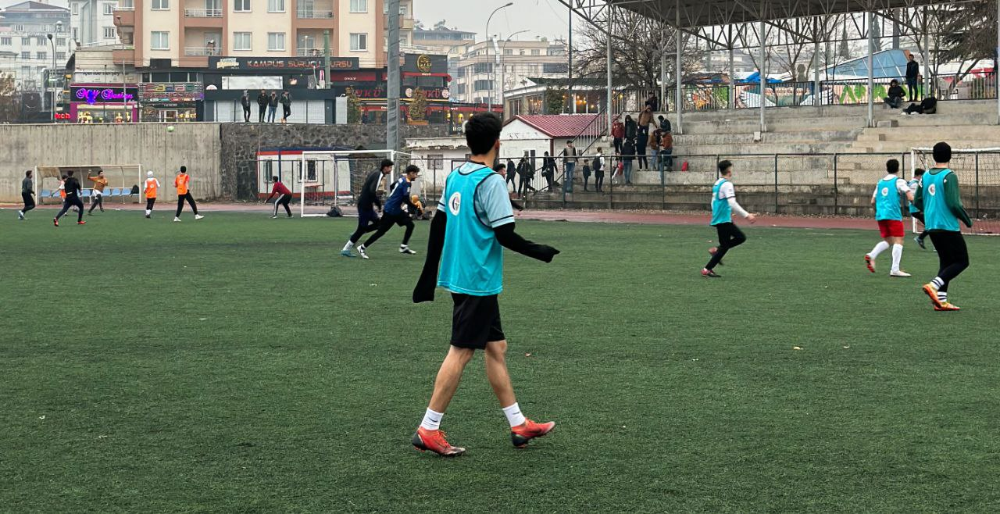
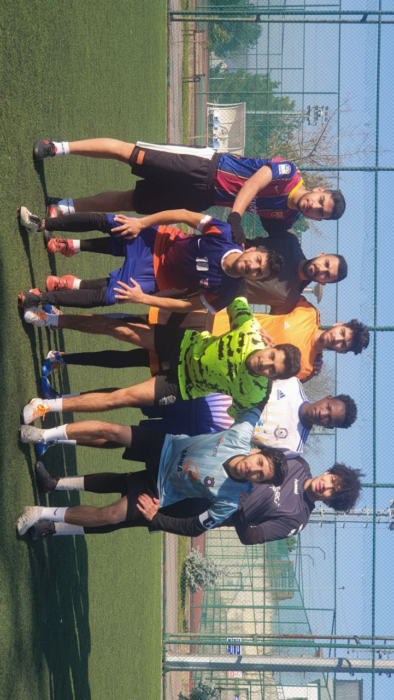

küçüklüğümden beri bilgisayarlarla uğraşmak isterdim ve babam elektrik mühendisidi bu yüzden evimizin her tarafı kablolarla doluydu büyüdükçe yavaş yavaş daha çpk şeyler öğrendim. savaştan dolayı ülkemizden çıktık ve her şeyi bırakmak zorunda kaldık buraya geldikten 5 sene sonra ilk laptop'umu aldım ve bilgisayar mühendisi olmak için daha çok çapa gösterdim. türkçe bilmiyorken türk liseye girdim somra da yös sınava girdim ve saü benim ilk ve son tercihim idi şuan da web teknolojiler dersinde ilk projemi heycanla yapıyorum.
Bu arkadaş benim
benim hayatımda onsuz olmaz dediğim şeylerden futboldur gaziantepte galatasaray akademisiyle oynadım sonra da suriyeli bir takım ile oynadık ve suriyeliler arası bölge şampiyonu aldık.

sakarya'da araplar arası turnuvasında katılmamdan bir fotoğraf

Boş zamanlarım da çok şey yapıyorum ama en sevdiğim çizim çizdiklerim "mandala" çok detaylı bir çizim bu yüzden bazen stresten kaçmak için çiziyorum